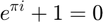

%bisection method code with graphs and slope checking function [root,vals,errors]=BisectionVerb(F,x1,x2,t,i,p)
syms x %symbolic var x to Fdiff x = x1; %passing val to simb var sf=sym(F); %Matlab function to sym func Fdiff=diff(sf); %differientiation of f Fderi=subs(Fdiff); %evaluation of f' in x1 val if Fderi<0 %if f' neg, x's are flipped l=x1; %placeholders r=x2; x1=r; %flipping x2=l; fpp=true; %flipped state flag end
Not enough input arguments.
Error in BisectionVerb (line 5)
x = x1; %passing val to simb var

fx=F; %name change idkw r1=fx(x1); %func evals in guess (root) 1 and two r2=fx(x2); if (r1>0 && r2>0) || (r1<0 && r2<0) %if no sign change, no intersection, no roots are avaiilable in this method disp("Invalid guessess :( method will diverge") root=("error"); return end %root calculation xm=(x1+x2)/2; % first mid x value xmEval=fx(xm); %first mid val eval v=1; %loop counter, vector indexer, iterations ran ie=100; % initial error ??? groots(v)=xm; while v <= i && ie >= t %iteration and tolerance checking if xmEval>0 %crosses in x1 to xm x2=xm; %leftmost is now xm else % corsses in xm to x2 x1=xm; % right most is now xm end % groots(v+1)=xm; % first x val in array % uses second val after first middel evaluation, must fix pastxm=xm; xm=(x1+x2)/2; % new middle val after crossing condition and assign currxm=xm; %current xm val %momentary error calc disp('past-current val error') ie=((abs((pastxm-currxm)))/pastxm)*100; %calcula error de elemento actual vs pasado disp(ie) %muestra valor actual de error xmEval=fx(xm); %eval current xm v=v+1; %loop++ groots(v+1)=xm; %new val in array end %while loop %final val vs iteration error array e=1; %counter de loop error errs(e) = nan; e = e + 1; %populates error matrix while e<=v %loop de matriz de errores V is now lenght of indexing vector errs(e) = ((abs((groots(v)-groots(e+1))))/groots(v))*100; %calcula el errores de cada elemento del array vs el final e=e+1; end if fpp==true %prints if diff at x1 is neg ... x's were flipped disp("Flipped x's") end %p flag graphs if (p==true) %graficos de error y valor si p=1 grapher(F,errs,groots,v) %text version of results else verboser(v,groots) end errors = size(errs); vals = size(groots); errors = errs; vals = groots; root = groots(v); return
end